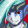
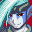
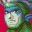
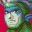

Now then,
who's up for some reading?
Now then,
who's up for some reading?
 Not me, thanks, I prefer
to be a bit more active.
Not me, thanks, I prefer
to be a bit more active.
 Getting Garet to read is
like pulling teeth. Believe me, I've tried.
Getting Garet to read is
like pulling teeth. Believe me, I've tried.
 You must have read a lot
of books by now, Piers...
You must have read a lot
of books by now, Piers...
 Oh, not especially, I'm
not much of a reader.
Oh, not especially, I'm
not much of a reader. How do you Lemurians pass the time and not just... get bored?
How do you Lemurians pass the time and not just... get bored?
 Oh, it's difficult but...
we do try.
Oh, it's difficult but...
we do try. Are those
bottles in your uncle's house-
Are those
bottles in your uncle's house-
 We don't talk about that.
We don't talk about that.
 It's alright, Piers. I
think we can understand how Lemurians might be driven to... drink a bit too
much.
It's alright, Piers. I
think we can understand how Lemurians might be driven to... drink a bit too
much. Living for hundreds
of years... it's... difficult to imagine.
Living for hundreds
of years... it's... difficult to imagine.
 Why don't we give Piers a
rousing cheer?
Why don't we give Piers a
rousing cheer? Oh, you
really needn't... I'm hardly in need of rousing...
Oh, you
really needn't... I'm hardly in need of rousing...


 
 

 POW POW PICARD!
POW POW PICARD!  Anyway. You'll find bits and bobs, informational stuff and some interesting meta
here, so please enjoy.
Anyway. You'll find bits and bobs, informational stuff and some interesting meta
here, so please enjoy.
Character List